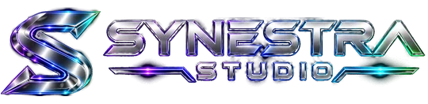

Une idée à la fois
Construire des parcours cohérents avant de multiplier les composants.

Design & création web
SiteForge explore la conception de pages, de composants et d’interactions numériques. Une démarche lisible : présenter, prototyper, vérifier, puis décider ce qui mérite d’être réalisé.
Les compositions présentées sont des démonstrations expérimentales et non des réalisations clients certifiées.
Schéma conceptuel. Les fonctions disponibles et les autorisations sont définies au cas par cas pendant la phase pilote.
Une direction lisible
Des éléments clairs, une hiérarchie forte et des interactions utiles. Les effets visuels restent au service du contenu.
Construire des parcours cohérents avant de multiplier les composants.
Donner du relief et du sens sans alourdir la navigation.
Comparer les rendus sur plusieurs écrans et préserver les choix validés.
Laboratoires publics
Une collection de prototypes statiques ou interactifs, chacun avec son univers distinct.
Une expérience éditoriale structurée autour de la typographie et de la composition.
Voir Prism ↗Une direction graphique expressive à confronter aux exigences d’un projet réel.
Voir Signature ↗Un laboratoire de formes et d’expérimentation graphique.
Voir le labo ↗De l’idée à l’interface
Clarifier le besoin et les contraintes.
Donner une forme visible au parcours.
Vérifier le rendu et l’interaction.
Valider la suite avec le propriétaire.